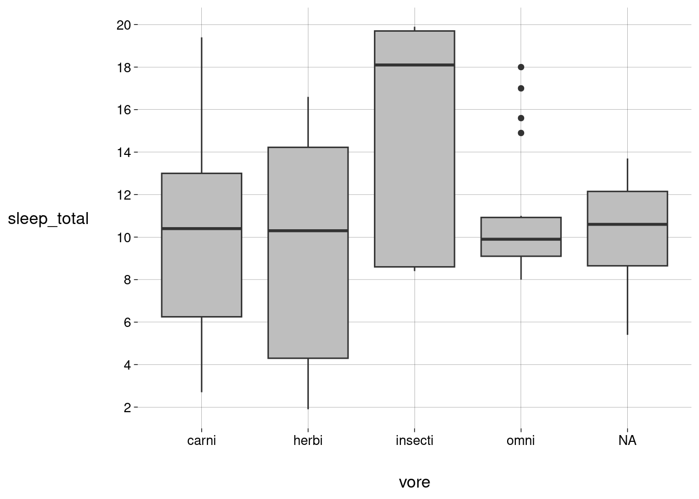
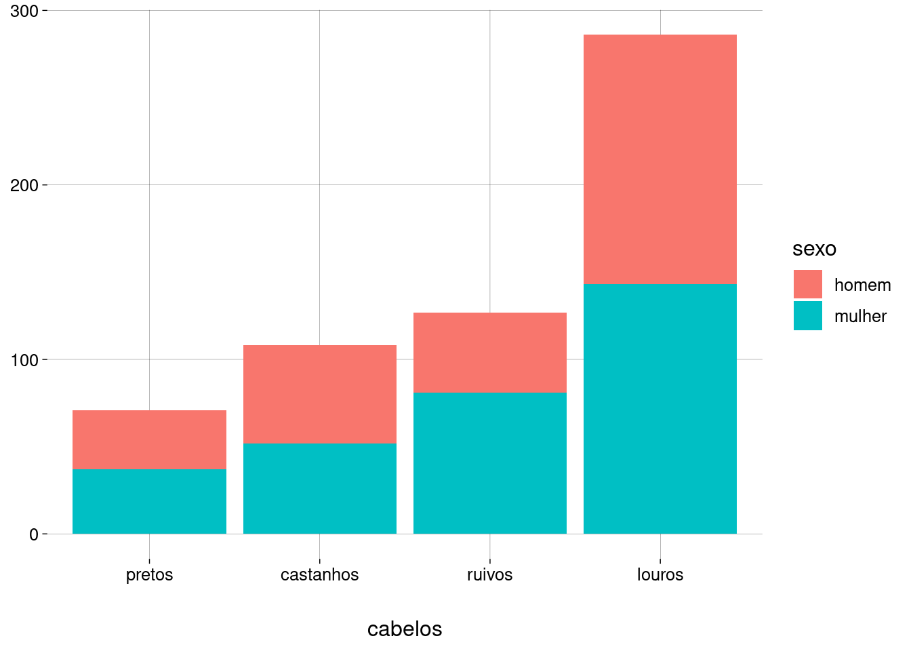
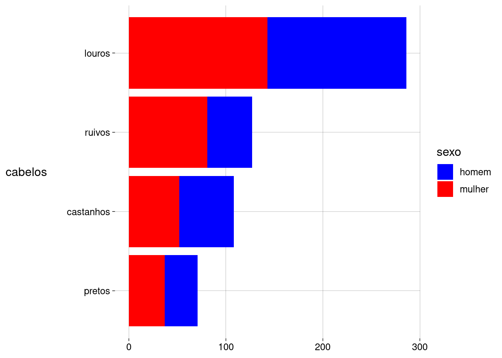
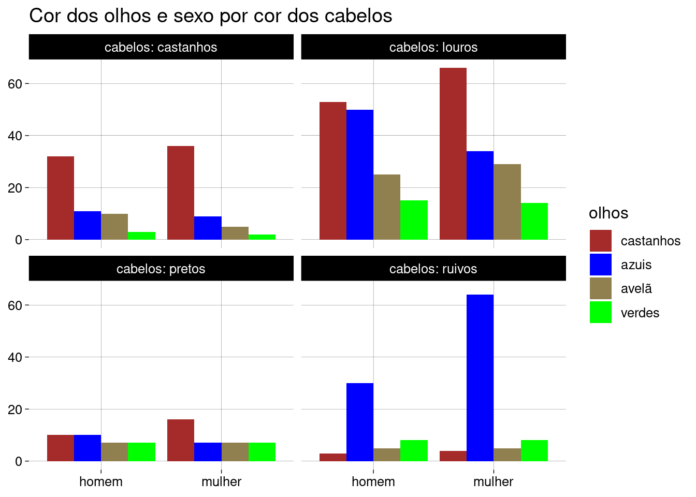
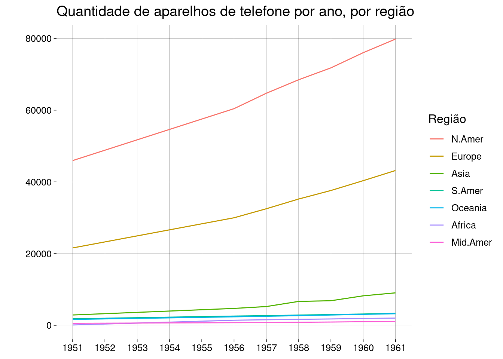

Capítulo 5 Visualização com ggplot2 (continuação)
Busque mais informações sobre os pacotes tidyverse e ggplot2 nas referências recomendadas.
5.2 Boxplots
5.2.1 Conjunto de dados
-
Vamos continuar a trabalhar com os dados sobre as horas de sono de alguns mamíferos:
5.2.2 Mediana e quartis
Para entender boxplots, precisamos, antes, entender algumas medidas.
-
Se tomarmos as quantidades de horas de sono de todos os animais do conjunto de dados e classificarmos estas quantidades em ordem crescente, vamos ter:
## [1] 1,9 2,7 2,9 3,0 3,1 3,3 3,5 3,8 3,9 4,0 4,4 5,2 5,3 5,3 5,4 5,6 ## [17] 6,2 6,3 6,3 7,0 7,7 8,0 8,3 8,4 8,4 8,6 8,7 8,7 8,9 9,1 9,1 9,4 ## [33] 9,4 9,5 9,6 9,7 9,8 9,8 10,0 10,1 10,1 10,1 10,3 10,3 10,4 10,6 10,9 11,0 ## [49] 11,0 11,1 11,3 11,5 12,1 12,5 12,5 12,5 12,5 12,8 12,8 13,0 13,5 13,7 13,8 14,2 ## [65] 14,3 14,4 14,4 14,5 14,6 14,9 14,9 15,6 15,8 15,8 15,9 16,6 17,0 17,4 18,0 18,1 ## [81] 19,4 19,7 19,9 -
Quantos valores são?
length(horas)## [1] 83 -
O valor que está bem no meio desta fila — i.e., na posição \(42\) — é a mediana:
## [1] 10,1 -
Em R:
median(horas)## [1] 10,1Mediana e média são coisas muito diferentes.
Por acaso, neste exemplo, a média das horas é próxima da mediana:
mean(horas)## [1] 10,43373Isto costuma acontecer quando a distribuição dos dados é aproximadamente simétrica.
-
Os quartis são os valores que estão nas posições \(\frac14\), \(\frac12\) e \(\frac34\) da fila. São o primeiro, segundo e terceiro quartis, respectivamente.
horas[ c( ceiling(length(horas) / 4), ceiling(length(horas) / 2), ceiling(3 * length(horas) / 4) ) ]## [1] 7,7 10,1 13,8 Sim, a mediana é o segundo quartil.
-
Em R, a função
quantilegeneraliza esta idéia: dado um número \(q\) entre \(0\) e \(1\), o quantil (com “N”) \(q\) é o elemento que está na posição que corresponde à fração \(q\) da fila ordenada.## 25% 50% 75% ## 7,85 10,10 13,75 Na verdade, R tem \(9\) algoritmos diferentes para calcular os quantis de uma amostra! Leia a ajuda da função
quantilepara conhecê-los.As diferenças entre nossos cálculos “à mão” e os resultados retornados por
quantilesão porque, em algumas situações,quantilecalcula uma média ponderada entre elementos vizinhos. Por isso,quantilepode retornar valores que nem estão no vetor.-
Em R, a função
summarymostra o mínimo, os quartis (com “R”), a média, e o máximo de um vetor:summary(horas)## Min. 1st Qu. Median Mean 3rd Qu. Max. ## 1,90 7,85 10,10 10,43 13,75 19,90
5.2.3 Média \(\times\) mediana
Vamos ver um exemplo simples para entender a diferença entre a média e a mediana.
-
Imagine o seguinte vetor com as receitas mensais de algumas pessoas (em milhares de reais:)
receitas <- c(1, 2, 2, 3.5, 1, 4, 1) -
Eis a mediana e a média deste vetor:
## Median Mean ## 2,000000 2,071429 A mediana e a média são bem próximas.
-
Imagine, agora, que adicionamos ao vetor um sujeito com receita mensal de \(100\) mil reais:
receitas <- c(1, 2, 2, 3.5, 1, 4, 1, 100) -
Eis a nova mediana e a nova média:
## Median Mean ## 2,0000 14,3125 O sujeito com a receita de \(2\) mil reais continua no meio da fila, mas a média (que é a soma de todas as receitas, dividida pelo número de indivíduos) ficou muito diferente.
A receita do novo sujeito é um valor discrepante, ou, em inglês, um outlier.
Conclusão:
A mediana é robusta, pouco afetada por outliers.
A média é pouco robusta, muito sensível a outliers.
5.2.4 Intervalo interquartil (IQR) e outliers
-
Qual fração dos elementos está entre o primeiro e o terceiro quartis?
## [1] 0,4939759 Metade do total de elementos está entre o primeiro e o terceiro quartis.
Este é o chamado intervalo interquartil (interquartile range, em inglês).
-
No nosso vetor
horas, os limites do IQR são## 25% 75% ## 7,85 13,75 -
O comprimento deste intervalo é calculado pela função
IQR:IQR(horas)## [1] 5,9 Valores muito abaixo do primeiro quartil podem ser considerados discrepantes (outliers), mas quão abaixo?
A resposta (puramente convencional) é \(1{,}5 \times \text{IQR}\) abaixo do primeiro quartil.
-
No nosso vetor
horas, isto significa valores abaixo de## [1] -1 -
Neste caso, não há outliers:
horas[horas < limite_inferior]## numeric(0) Da mesma forma, valores muito acima do terceiro quartil podem ser considerados discrepantes (outliers), mas quão acima?
De novo, a resposta (puramente convencional) é \(1{,}5 \times \text{IQR}\) acima do terceiro quartil.
-
No nosso vetor
horas, isto significa valores acima de## [1] 22,6 -
Neste caso, também não há outliers:
horas[horas > limite_superior]## numeric(0) -
Outro exemplo: vamos tomar apenas os mamíferos onívoros:
-
Vamos extrair o vetor de horas de sono:
## [1] 17,0 14,9 10,0 10,3 8,3 9,1 18,0 10,1 10,9 9,8 8,0 10,1 9,7 9,4 11,0 8,7 ## [17] 9,6 9,1 15,6 8,9 -
Vamos calcular o primeiro e terceiro quartis:
## 25% 75% ## 9,100 10,925 -
Vamos achar o IQR:
IQR(horas)## [1] 1,825 -
E os limites a partir dos quais os valores são outliers:
## [1] 6,3625 13,6625 -
Existem outliers inferiores?
Não.
-
Existem outliers superiores?
Sim! Estes animais dormem demais em comparação com os outros onívoros.
5.2.5 Gerando boxplots
Um boxplot é uma representação visual dos valores que calculamos acima.
-
No
ggplot2, a geometriageom_boxplotconstrói boxplots:sono %>% ggplot(aes(y = sleep_total)) + geom_boxplot(fill = 'gray') + scale_x_continuous(breaks = NULL) + scale_y_continuous(breaks = seq(0, 20, 2)) A caixa vai do valor do primeiro quartil (embaixo) até o terceiro quartil (em cima).
A linha horizontal dentro da caixa representa o valor da mediana.
As linhas verticais acima e abaixo da caixa (pitorescamente chamadas de “bigodes”) vão até o limite inferior (primeiro quartil \({}- 1{,}5 \times \text{IQR}\)) e até o limite superior (terceiro quartil \({}+ 1{,}5 \times \text{IQR}\)).
Neste boxplot, não há outliers.
-
Podemos usar a posição \(x\) para desenhar vários boxplots, um para cada dieta:
sono %>% ggplot(aes(x = vore, y = sleep_total)) + geom_boxplot(fill = 'gray') + scale_y_continuous(breaks = seq(0, 20, 2)) No boxplot de onívoros, os outliers aparecem como pontos isolados, acima da caixa, além dos alcances do bigode superior (aliás, onde está bigode superior?).
Boxplots lado a lado são úteis para compararmos grupos diferentes de dados.
Veja como, com exceção dos insetívoros, as medianas dos grupos são parecidas.
Veja como carnívoros, insetívoros e herbívoros apresentam maior variação, enquanto onívoros e animais sem dieta registrada apresentam menor variação.
-
Vamos combinar, em um só gráfico
Os pontos representando os animais,
Os boxplots,
As médias (que podem estar próximas ou distantes das medianas).
sono %>% ggplot(aes(x = vore, y = sleep_total)) + geom_boxplot(fill = 'gray') + scale_y_continuous(breaks = seq(0, 20, 2)) + geom_point( color = 'blue', alpha = .3 ) + stat_summary( fun = mean, geom = 'point', color = 'red', shape = 'cross', size = 5, stroke = 1 ) + labs( title = 'Sono total de diversos mamíferos, por dieta', subtitle = '(o X vermelho representa a média)', x = 'dieta', y = 'sono total\n(em horas)' ) Quando a caixa é longa, o IQR é grande, e os valores estão muito espalhados; é o caso dos herbívoros e insetívoros.
Quando a caixa é curta, o IQR é pequeno, e os valores estão pouco espalhados; é o caso dos onívoros. Como o IQR é pequeno, os \(4\) mamíferos com mais de \(14\) horas de sono são outliers.
Observe, ainda, como os outliers “puxam” a média dos onívoros para cima.
5.4 Gráficos de barras e de colunas
5.4.1 Conjunto de dados
O R tem um array de \(3\) dimensões com dados sobre as cores dos cabelos e dos olhos de \(592\) alunos e alunas de uma universidade americana em \(1974\).
-
Se pedirmos para o R exibir os dados, veremos duas matrizes, uma para cada sexo:
HairEyeColor## , , Sex = Male ## ## Eye ## Hair Brown Blue Hazel Green ## Black 32 11 10 3 ## Brown 53 50 25 15 ## Red 10 10 7 7 ## Blond 3 30 5 8 ## ## , , Sex = Female ## ## Eye ## Hair Brown Blue Hazel Green ## Black 36 9 5 2 ## Brown 66 34 29 14 ## Red 16 7 7 7 ## Blond 4 64 5 8 Vamos transformar este array em um data frame.
-
O array contém apenas os totais de cada classe. Vamos usar a função
uncountpara gerar uma linha para cada aluno:df_orig <- as.data.frame(HairEyeColor) %>% uncount(Freq) %>% as_tibble() df_orig O
ggplot2e os outros pacotes dotidyverseforam projetados para trabalhar com data frames neste formato, com uma observação (um indivíduo, um elemento) por linha. É o chamado formato tidy.-
Usando vetores com elementos nomeados, podemos traduzir o conteúdo do data frame para português:
cabelo <- c( 'Brown' = 'castanhos', 'Blond' = 'louros', 'Black' = 'pretos', 'Red' = 'ruivos' ) olhos <- c( 'Brown' = 'castanhos', 'Blue' = 'azuis', 'Hazel' = 'avelã', 'Green' = 'verdes' ) sexo <- c( 'Male' = 'homem', 'Female' = 'mulher' ) df <- df_orig %>% transmute( cabelos = cabelo[Hair], olhos = olhos[Eye], sexo = sexo[Sex] ) -
Um sumário:
Variável Estatísticas / Valores Freqs (% de Válidos) Grafo Faltante cabelos
[character]1. castanhos
2. louros
3. pretos
4. ruivos108 (18,2%)
286 (48,3%)
71 (12,0%)
127 (21,5%)0
(0,0%)olhos
[character]1. avelã
2. azuis
3. castanhos
4. verdes93 (15,7%)
215 (36,3%)
220 (37,2%)
64 (10,8%)0
(0,0%)sexo
[character]1. homem
2. mulher279 (47,1%)
313 (52,9%)
0
(0,0%)
5.4.2 Gerando gráficos de barras
Um gráfico de barras contém uma barra para cada valor de uma variável categórica.
-
Usamos
geom_barpara gerar um gráfico de barras de cores de cabelo:Gráfico de barras \(\times\) histograma:
Os dois tipos de gráficos mostram a frequência (quantidade de elementos) no eixo vertical.
-
No gráfico de barras:
A variável é categórica (nominal).
Cada barra corresponde a um valor da variável.
As barras não se tocam, enfatizando o fato de que a variável é categórica.
-
No histograma (veja o exemplo):
A variável é quantitativa (intervalar ou racional).
Cada barra corresponde a uma classe de valores da variável.
As barras se tocam, para enfatizar que as classes são contíguas.
Um gráfico de barras é mais legível quando as barras são mostradas em ordem crescente ou decrescente.
Embora os valores da variável
cabelossejam strings, podemos aplicar a eles funções que manipulam fatores.A função
fct_infreq, do pacoteforcats, ordena os valores em ordem decrescente de frequência.-
A função
fct_rev, também do pacoteforcats, inverte a ordenação.
A posição \(x\) e a altura de cada barra são estéticas: a posição \(x\) representa a cor dos cabelos, e a altura representa a frequência daquela cor.
-
Vamos acrescentar mais uma estética: a cor de preenchimento vai representar o sexo.
df %>% ggplot(aes(x = fct_rev(fct_infreq(cabelos)), fill = sexo)) + geom_bar() + labs( x = 'cabelos', y = NULL ) -
Se a cor dos homens incomoda você, altere a escala que especifica o preenchimento (
scale_fill_discrete):df %>% ggplot(aes(x = fct_rev(fct_infreq(cabelos)), fill = sexo)) + geom_bar() + scale_fill_discrete(type = c('blue', 'red')) + labs( x = 'cabelos', y = NULL ) -
Podemos fazer um gráfico de barras horizontais com
coord_flip. Isto geralmente é útil quando os rótulos das barras são longos:df %>% ggplot(aes(x = fct_rev(fct_infreq(cabelos)), fill = sexo)) + geom_bar() + scale_fill_discrete(type = c('blue', 'red')) + labs( x = 'cabelos', y = NULL ) + coord_flip() Você consegue dizer se há mais homens ou mulheres com cabelos pretos? E castanhos? E ruivos?
Se posicionarmos as barras lado a lado, fica mais fácil responder.
-
Usamos o argumento
position = 'dodge'degeom_bar. “Dodge” significa “esquivar-se”, em inglês.df %>% ggplot(aes(x = fct_rev(fct_infreq(cabelos)), fill = sexo)) + geom_bar(position = 'dodge') + labs( x = 'cabelos', y = NULL ) + scale_fill_discrete(type = c('blue', 'red'))
-
Agora vamos examinar a relação entre as cores dos olhos e as cores dos cabelos:
df %>% ggplot(aes(x = fct_rev(fct_infreq(cabelos)), fill = olhos)) + geom_bar() + scale_fill_discrete( type = c('#908050', 'blue', 'brown', 'green') ) + labs( x = 'cabelos', y = NULL ) -
Ou, com barras lado a lado:
df %>% ggplot(aes(x = fct_rev(fct_infreq(cabelos)), fill = olhos)) + geom_bar(position = 'dodge') + scale_fill_discrete( type = c('#908050', 'blue', 'brown', 'green') ) + labs( x = 'cabelos', y = NULL ) -
Observações e perguntas:
Há mais pessoas louras de olhos castanhos do que louras de olhos azuis. O esperado não seria mais pessoas louras de olhos azuis? Pessoas louras de olhos castanhos pintaram os cabelos?
Há muito mais ruivos de olhos azuis do que ruivos de olhos verdes. Não deveria ser o contrário? Também são pessoas que pintaram os cabelos de ruivo? Ou houve erro no registro das cores dos olhos?
-
Para incluir o sexo, podemos facetar o gráfico. Usando
facet_wrap3, geramos dois subgráficos lado a lado:df %>% ggplot(aes(x = fct_rev(fct_infreq(cabelos)), fill = olhos)) + geom_bar(position = 'dodge') + scale_fill_discrete(type = c('#908050', 'blue', 'brown', 'green')) + facet_wrap(~sexo) + labs( title = 'Cores de cabelos e olhos por sexo', y = NULL, x = 'cabelos' )
Se a quantidade grande de pessoas louras de olhos castanhos (em comparação com pessoas louras de olhos azuis) for por causa da pintura de cabelos, então o gráfico acima mostra que as mulheres pintam os cabelos de louro com mais frequência do que os homens.
-
Quando facetamos por cor de cabelos, também podemos observar as mesmas diferenças entre homens e mulheres:
df %>% ggplot(aes(x = sexo, fill = fct_infreq(olhos))) + geom_bar(position = 'dodge') + facet_wrap(~cabelos, labeller = label_both) + scale_fill_discrete(type = c('brown', 'blue', '#908050', 'green')) + labs( x = NULL, y = NULL, fill = 'olhos', title = 'Cor dos olhos e sexo por cor dos cabelos' )
5.4.3 Data frame já contendo os totais
Você percebeu que
geom_baranalisa o data frame e calcula as frequências necessárias para construir o gráfico.Em algumas situações, o data frame já contém as frequências (em vez de conter uma linha por indivíduo).
-
Vamos usar
countpara criar um data frame assim: Para \(4\) cores de cabelo, \(4\) cores de olhos, e \(2\) sexos, são \(32\) combinações possíveis.
-
Com este data frame, podemos gerar todos os gráficos anteriores usando
geom_colno lugar degeom_bar. Por exemplo:
Com
geom_col, precisamos passar a estética \(y\) (no nosso exemplo, a variáveln, que contém as frequências).-
Para ordenar as barras, usamos a função
fct_reorder, que ordena os níveis de um fator (cabelos) de acordo com o resultado de uma função (sum) aplicada sobre os valores de outra variável (n):
5.5 Gráficos de linha e séries temporais
5.5.1 Conjunto de dados
-
O R tem uma matriz com as quantidades de telefones em várias regiões do mundo ao longo de vários anos:
WorldPhones## N.Amer Europe Asia S.Amer Oceania Africa Mid.Amer ## 1951 45939 21574 2876 1815 1646 89 555 ## 1956 60423 29990 4708 2568 2366 1411 733 ## 1957 64721 32510 5230 2695 2526 1546 773 ## 1958 68484 35218 6662 2845 2691 1663 836 ## 1959 71799 37598 6856 3000 2868 1769 911 ## 1960 76036 40341 8220 3145 3054 1905 1008 ## 1961 79831 43173 9053 3338 3224 2005 1076 Os números representam milhares.
Os números dos anos são os nomes das linhas da matriz.
-
Vamos transformar esta matriz em uma tibble:
fones <- WorldPhones %>% as_tibble(rownames = 'Ano') %>% mutate(Ano = as.numeric(Ano)) fones -
Esta tibble não está no formato tidy. Queremos que cada linha corresponda a uma observação, contendo
Ano,
Região,
Quantidade de telefones.
-
Usamos a função
pivot_longerpara mudar o formato da tibble:fones_long <- fones %>% pivot_longer( cols = -Ano, names_to = 'Região', values_to = 'n' ) fones_long Confira: antes, tínhamos \(7\) anos, com \(7\) quantidades por ano, uma quantidade por região. Eram \(49\) quantidades. Agora temos uma tibble de \(49\) linhas.
5.5.2 Gerando gráficos de linha
-
A geometria
geom_linegera gráficos de linha. Perceba como geramos uma linha por região:fones_long %>% ggplot(aes(x = Ano, y = n, color = Região)) + geom_line() + scale_x_continuous(breaks = 1951:1961) -
Embora a legenda associe uma cor a cada região, a leitura seria mais fácil se a ordem das regiões na legenda coincidisse com a posição das linhas na borda direita da grade:
fones_long %>% ggplot( aes( x = Ano, y = n, color = fct_rev(fct_reorder(Região, n, max)) ) ) + geom_line() + scale_x_continuous(breaks = 1951:1961) + labs( color = 'Região', y = '', x = NULL, title = 'Quantidade de aparelhos de telefone por ano, por região' ) -
Parece que está faltando uma linha, mas o que acontece é que as quantidades da América do Sul e da Oceania são bem parecidas:
Estamos tratando estes dados como simples números, mas, na verdade, este conjunto de dados é uma série temporal (time series).
R tem todo um conjunto de funções para tratar séries temporais, calcular tendências, achar padrões cíclicos, fazer estimativas, e gerar gráficos específicos, entre outras coisas.
Mas não vamos falar mais sobre séries temporais aqui.
-
O pacote
tsibbleoferece maneiras de trabalhar com séries temporais de maneira tidy. Você pode ler a documentação do pacote entrando
5.6 Exercícios
5.6.1 O bigode dos onívoros
- Examine o data frame
sonopara descobrir o que houve com o bigode superior do boxplot dos onívoros neste gráfico.
5.6.2 Usando geom_col
- Use
geom_colpara reproduzir, a partir do data framedf_tot, todos os gráficos que foram gerados comgeom_barna seção Gerando gráficos de barras.
5.7 Referências sobre visualização e R
Busque mais informações sobre os pacotes tidyverse e ggplot2 nas referências recomendadas.